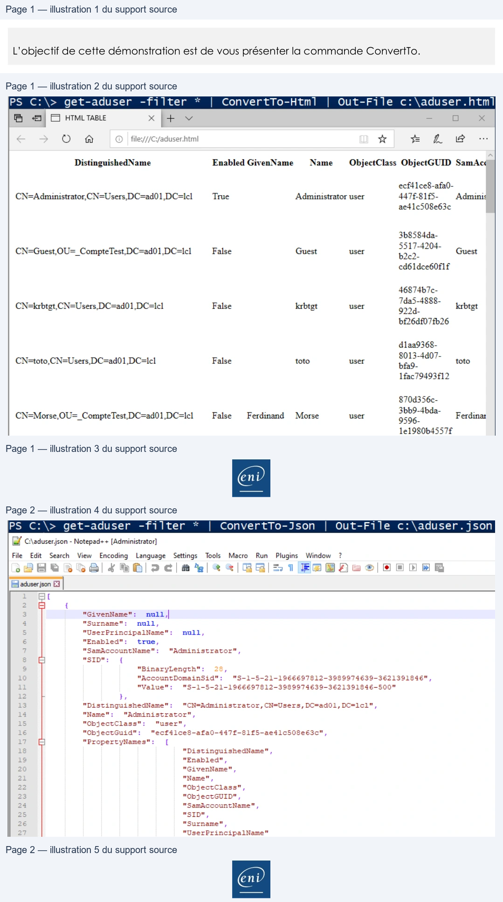

Transcription du document du Drive TSSR. La mise en forme est adaptée au Web ; les compléments IA du portail sont présentés séparément.
Initiation au Scripting avec PowerShell
Démonstration 11 du module 3
L’objectif de cette démonstration est de vous présenter la commande ConvertTo.
Comme nous venons de le voir pour les formats pris en charge, l’export se fait directement depuis
la console. Pour les autres formats, il est nécessaire de passer par une étape de conversion des
données.
•
Pour les formats HTML et JSON on doit :
o Convertir dans un premier temps les données au format souhaité
o Exporter les données converties dans un fichier.
Les données sont converties en balises HTML compatibles avec un navigateur web.
Page 1/2
© ENI – Tous droits réservés
PS C:\> get-aduser
-filter
*
|
ConvertTo-Html
|
Out-File c:\aduser.html
a F3 HTML TABLE
x f+ Vv
=
Oo
x
<
>
oO
Al
© | file:///C:/aduser.html
À
=
L
ae
ve
DistinguishedName
Enabled GivenName
Name
ObjectClass ObjectGUID SamAcc
ecf41ce8-afa0-
CN=Administrator CN=Users DC=ad01 DC=Ici
True
Administrator user
447£-81f5-
Adminis
ae41c508e63c
3b8584da-
+
5517-4204-
CN=Guest.0U=_CompteTest.DC=ad01.DC=lel
False
Guest
user
b2c2-
Guest
cd6ldce60f1f
46874b7c-
CN=krbtgt, CN=Users DC=ad01,DC=lel
False
krbtgt
user
sa
krbtgt
bf26df07fb26
d1aa9368-
-4d07-
CN=toto, CN=Users DC=ad01,DC=lel
False
toto
user
OT
toto
1fac79493f12
870d356c-
CN=Morse OU= CompteTest DC=ad01.DC=Icl
False
Ferdinand
Morse
user
RS
Ferdinar
1e1980b4557f
Initiation au Scripting avec PowerShell
Pour le format JSON, la procédure est identique mais la lecture se fera indirectement par une
application prenant en charge le fichier JSON.
Pour éviter l’écrasement des données, on ajoute le paramètre Append à la commande Out-File.
Page 2/2
© ENI – Tous droits réservés
PS C:\> get-aduser
-filter
*
|
ConvertTo-Json
|
Out-File c:\aduser.json
EX C:\aduser.json - Notepad++ [Administrator]
File
Edit
Search
View
Encoding
Language
Settings
Tools
Macro
Run
Plugins
Window
?
ARR
4e 02e
a sIBGR|=1E8BPSe2| STE
Ed aduserjson £3
1
Et
2
E
{
3
"GivenName":
null 4
a
"Surname":
null,
5
"UserPrincipalName":
null,
6
"Enabled":
true,
7
"SamAccountName":
"Administrator",
8
E
"SID":
{
2
"BinaryLength":
28,
10
"AccountDomainSid":
"S-1-5-21-1966697812-3989974639-3621391846",
ul
"Value":
"S-1-5-21-1966697812-3989974639-3621391846-500"
12
},
13
"DistinguishedName":
"CN=Administrator, CN=Users, DC=ad01,DC=1cl",
14
"Name":
"Administrator",
15
"ObjectClass":
"user",
16
"ObjectGuid":
"ecfälce8-afa0-447f-81f5-ae4lc508e63c",
17
=
"PropertyNames":
[
18
"DistinguishedName",
19
"Enabled",
20
"GivenName",
21
"Name",
22
"ObjectClass",
23
"ObjectGUID",
22
"SamAccountName",
25
"SID",
26
"Surname",
27
"UserPrincipalName"
